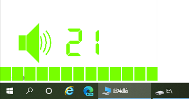

Nobody can go back and start a new begining but anyone can start now and make a new ending.
音量控制工具WUROOM

内容说明： 为方便在全屏工作时，通过自定义快捷键控制音量或显示时间，集音量控制、时间控制、常用程序控制、万年历等于一体，有需要的赶紧来下载使用吧。
1.实现通过自定的键盘快捷键方便地控制音量，并有指示功能；
2.声音调节功能，可以设定调节步进值，指示可以自订显示颜色、大小、隐藏时间等；
3.时间显示功能，快捷键开关显示、数字或二进制式显示、位置调节、颜色设置、整点二进制报时等；
4.常用程序设置，可以自定10个常用程序，用快捷键或点击任务栏图标打开；
5.万年历功能，包括农历、节气、自定节日及常见一些节日，鼠标移到任务栏图标有相应指示。
下载地址：本站下载